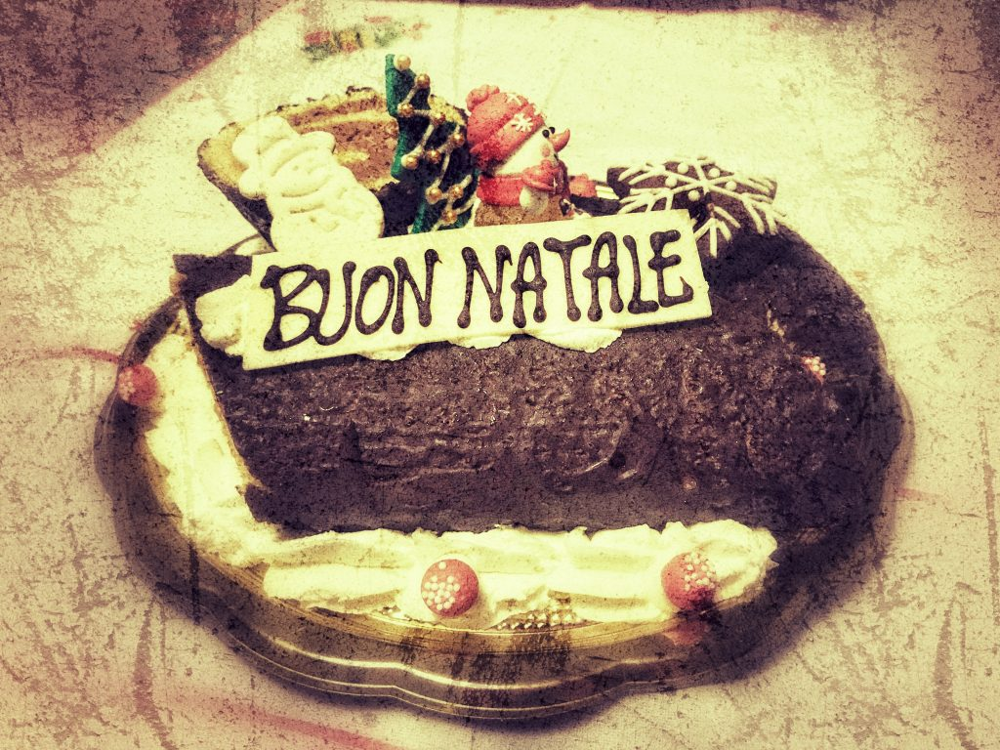

Photo by Francesca Tosolini
Did you know that in Italy the day after Christmas, also known as giorno di Santo Stefano, is a national holiday? However, it wasn't always like that. Up until 1948 the day after Christmas was a regular working day, then the government decided to make the Christmas holiday longer and added an extra day to the festivities of the 25th of December. In spite of that Santo Stefano is an important figure for the Catholic Church since he was the first Christian martyr.